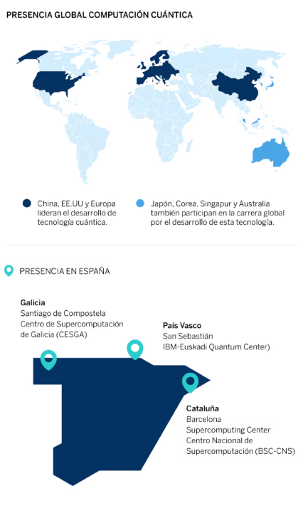

La computación cuántica, como cualquier nuevo paradigma tecnológico, tiene aplicaciones infinitas y
desconocidas. En el último año el segmento ha atraído una inversión sustancial de capital riesgo (248
millones de dólares en 2017 frente a los 43 millones en 2016), una fuerte investigación y participación
tanto de las empresas de tecnología como de las empresas del Fortune 500 y el apoyo de diferentes gobiernos
(Australia, China, Europa y EEUU). Según las proyecciones de Morgan Stanley, la computación de gama alta
(incluida la computación cuántica) es un mercado que valdrá 10.000 millones de dólares en 10 años frente a
los 5.000 millones de dólares actuales.
Ejemplos de desarrollos
Actualmente, la mayor parte de los procesadores cuánticos son demasiado pequeños o poco fiables para ser
útiles pero varias empresas están experimentando activamente al respecto con el fin de protegerse contra la
ralentización en la mejora de ordenadores convencionales.
- Accenture Labs y 1QBIT se han unido para explorar el potencial de los casos de uso de
la computación cuántica, con más de 150 casos mapeados hasta la fecha.
- Airbus está explorando los casos de uso en la industria aeroespacial: el Big Data, el
diseño de sistemas y vehículos aéreos o el diseño de nuevos materiales. Airbus también ha invertido en
QC Ware, una empresa de software cuántico.
- Alibaba y la Academia de Ciencias China se han unido para investigar en el uso de
computación cuántica en seguridad para el comercio electrónico y los centros de datos. En marzo lanzaron
un nube cuántica de 11 qubits.
- Baidu ha creado el Instituto de Computación Cuántica de Baidu con el objetivo de
integrar esta tecnología en su negocio en menos de 5 años.
- Booz Allen tiene un equipo de trabajo enfocado al uso de la computación cuántica para
proporcionar soluciones a sus clientes en áreas como la optimización de sistemas y redes, enrutamiento
de vehículos, logística, programación de trabajos, descubrimiento de nuevos fármacos o diseño de
sistemas de fabricación.
- Laboratorio de inteligencia artificial cuántica de Google ha anunciado un chip de
computación cuántica de 72 qubits (llamado Bristlecone). También opera ProjectQ, un framework de código
abierto para ayudar a los desarrolladores a escribir código para ordenadores cuánticos y colabora con
OpenFermion un paquete de código abierto para informática cuántica.
- IBM Quantum Systems es una práctica para construir computadoras cuánticas universales
disponibles comercialmente y anunció en noviembre de 2017 la creación de un procesador de 20 bits
disponible a través de la nube para sus primeros clientes y un prototipo de procesador de 50 bits
disponible para los colaboradores en un año. Adicionalmente, en diciembre de 2017 lanzó IBM Q Network,
una colaboración entre empresas de Fortune 500, universidades y laboratorios nacionales basada en el
código abierto y las herramientas de desarrollo de IBM (la red contará con 4 IBM Quantum Computing Hubs
alojados en universidades)
- Intel estableció la iniciativa de investigación en computación cuántica en 2015 con
QuTech y ha presentado un procesador de 49 qubits llamado Tangle Lake en CES 2018.
- Microsoft ofrece simulación de computación cuántica equivalente a 30 qubits de potencia
en computadoras personales y 40 qubits de potencia usando Azure. La compañía también anunció en
diciembre de 2017 el lanzamiento de un kit de desarrollo cuántico y un lenguaje de programación Q# con
enfoque cuántico totalmente integrado.
Guidance
- Las investigaciones sobre computación cuántica se encuentra en sus primeras fases y las primeras
aplicaciones serán limitadas, tendremos que esperar por lo menos más de una década para ver la
comercialización de los ordenadores cuánticos.
- La larga espera se debe a que un ecosistema necesita emerger para soportar la computación cuántica. La
mayor parte de la cadena de valor deberá cambiar incluyendo hardware, software, algoritmos,
arquitectura, formación integración de sistemas, servicios, proceso, modelos de negocio y incluso
surgirán nuevas instituciones y regulaciones.
- Aunque la computación cuántica a gran escala y de uso general probablemente está a años de distancia,
los desarrolladores de hoy tienen acceso a los primeros sistemas y a simulaciones que se ejecutan en
computadoras clásica, lo que les esta permitiendo mejorar la computación clásica. Por otro lado las
empresas que ha detectado la escala de la oportunidad están invirtiendo en aprendizaje, experimentos,
vías para la co-creación etc. para asegurar una ventaja inicial.
- Existen medidas que las empresas pueden llevar a cabo a corto plazo para sentar las bases para la
llegada de una nueva tecnología:
Detección e investigación. Construir una hipótesis sobre el
impacto de la computación cuántica en el modelo de negocio.
Exploración y experimentación. Observar como otros están
enfocando y explotando sus fortalezas y considerar como un ecosistema de socios, vendedores,
proveedores y grupos de interés internos puede ayudar a logar los resultados deseados.
Incubación. Considerar la posibilidad de establecer centro que
cuenten con personal de talento exclusivo y con experiencia en la incubación de nuevas tecnologías.
